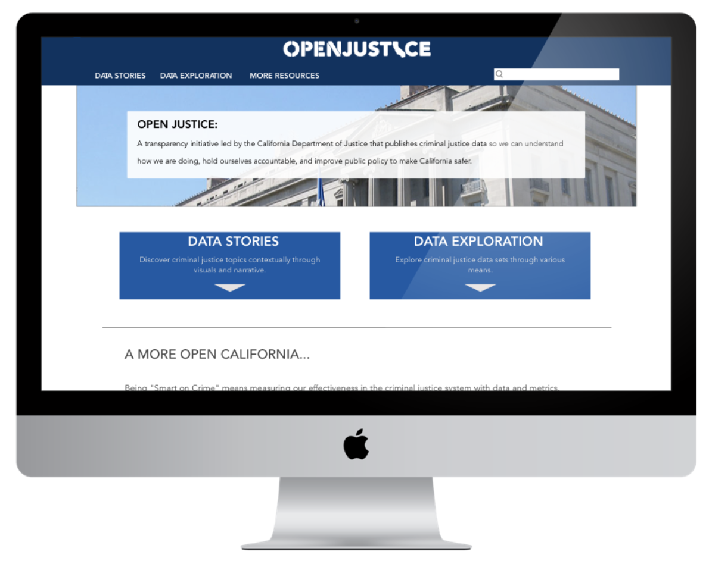

OpenJustice is an initiative led by the California Department of Justice to make criminal justice data accessible to everyone in an effort to be “smart on crime.”
Role
- UX/UI Designer and Researcher
Team
- I collaborated with a UX designer for the research and initial prototyping and I was the sole visual designer
Deliverables
- Research
- Personas
- Sitemap
- Wireframes
- Mockups
The Challenge
“It seems like the site tries to cater to everyone at once, but is unsuccessful at both ends”
OpenJustice came to us with a problem: how can criminal justice data be made approachable for laypeople while simultaneously being useful and effective for more active data users? Our client had a broad idea of the site’s issues and came to us for recommendations on what changes need to be made to make it more user-friendly.
The Solution
A two tiered approach to navigation directing different types of users to the appropriate data sets
The key insight we found in our research was that users tended to approach data in one of two ways: as an expert interested in digging deep to find a specific data set OR as someone who is interested in the information but would prefer a more curated experience. This insight helped drive our understanding of the problem and shaped our ultimate design.
